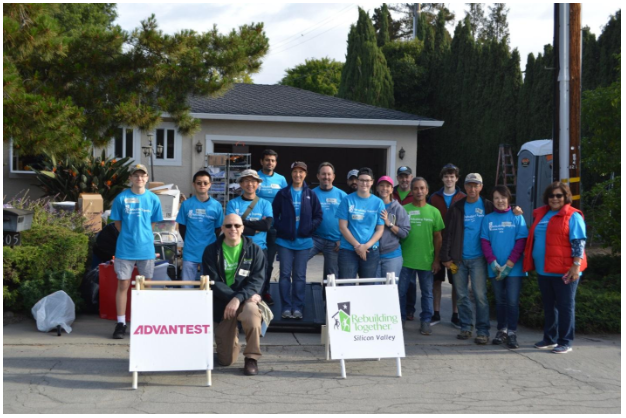

On April 28, 2018 Advantest America sponsored, and took part in, “Rebuilding Day” in San Jose, California hosted by the non-profit organization Rebuilding Together Silicon Valley (RTSV). RTSV provides critical home repairs to community members as well as facility updates and maintenance to local non-profit organizations. Advantest’s Spring 2018 project collaborated with Life Services Alternatives (LSA), a nonprofit organization that operates community-based homes that provide residential care and support for adults with developmental disabilities. Advantest volunteers spent the day at a LSA home adding additional support, insulation and drywall to the garage where residents enjoy spending time and exercising. In addition to the garage projects, volunteers also installed a new water softener, cleaned the gutters, added gutter covers, and planted flowers and shrubbery in the back and side yards.
In honor of the long-standing partnership between Advantest and Rebuilding Together, Patrick Stafford (PS) and Werner Haberstock (WH), who are integral planners and participants at these events for Advantest, answered some questions about their experience.
What would you like people to know about your experience of participating with Rebuilding Together?
PS: Advantest America first partnered with Rebuilding Together Silicon Valley in the spring of 2005 and has since completed over 25 different projects during their semi-annual rebuilding days. All tasks are completed by Advantest employees who volunteer their time 2 Saturdays a year to take part in various construction and gentrification projects from painting walls and gardening to building fences and repairing roofs. Over the last 13 years employees have donated thousands of hours of their time to this organization and gained valuable new skills.
The people we meet through these events all have interesting histories/stories and it has been great to get to know them. Once, we were surprised to learn that we had selected a project house of an ex-coworker who had retired 25 years prior and was remembered fondly by some of our team members. This past weekend, we worked on a LSA facility where we discovered that one of our team member’s relatives lived. This is a ‘small’ valley.
Rebuilding Days have been a wonderful opportunity for our employees to work together as a team outside of the office, get to know each other on a more personal level, as well as just being able to learn new skills. Some memorable events were — helping a 101-year-old woman who came to San Jose in the early 1930’s with her parents to escape the “Dust Bowl,” running across old friends or co-workers at various work sites, seeing the great work that organizations like LSA do, and working with the great people at Rebuilding Together who are very caring of each of the projects.
What are some of the more common repairs or upgrades done?
PS: Our team has taken on a variety of tasks which make the home/facility safer and more comfortable. This includes installing flooring, repairing and/or building decks, insulating and dry walling a garage, repairing doors to make them easier to open, replacing fencing, installing grab bars in showers, installing smoke detectors, building pergolas, gardening, and painting.
What are some more unusual/interesting tasks you have conducted?
WH: Building a pergola for a facility where the residents were sensitive to light was interesting as we had to build it from the ground up. At another facility, we were challenged when replacing flooring because the old carpeting was completely glued to the cement below. It took nearly a week to remove.
What are the people like who tend to show up and help at these events?
WH: The Advantest employees and their family members who come to help all have very different roles in our company, but they all want to help others. These are giving people, who do what is needed to complete the project.
Briefly describe how tools, materials and delegation of labor is handled.
WH: After we know what job we will be working on, our House Captain, Co-Captain, Volunteer Coordinator, and any other skilled people joining the project, will do a site visit and then meet to review each task. Most are knowledgeable in construction and can identify the materials and tools that are needed. As we get closer to the Rebuilding Day, we review the volunteer list and identify who may be able to help with different tasks. On Rebuilding Day, we will suggest the roles for the people, but also give them the opportunity to learn something new. Under supervision, we have had people learn how to use circular saws, jack hammers, augers, nail guns, and other tools. This has allowed people to take these new skills home with them to use in their own lives as well.